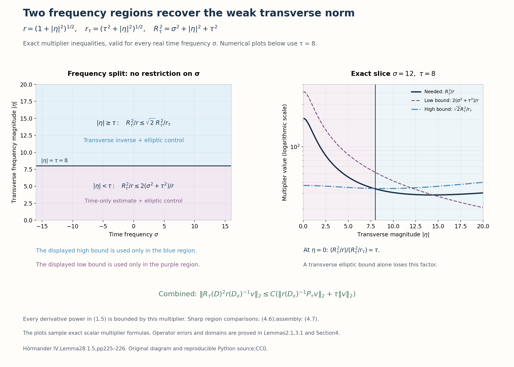

Weighted elliptic control for a second-order evolution factor
An elliptic second-order operator controls two derivatives. After exponential conjugation, the weight parameter behaves like another frequency. The double-factor argument needs two versions of this control: a weak transverse norm that retains both time derivatives, and a full first-derivative norm with an inverse of the total frequency applied to the equation. We prove both versions before using the second-order positive commutator.
The complete finite product and adjoint calculus, Schwartz continuity and uniform norm bounds are (B8b), (B8a), (B6) and (B26) in When a moving symbol scale controls an operator, at its declared entry prerequisites. We use its Gauss construction for finite products with a bounded composition parameter. The explicit weight conjugation is proved in Exponential weights for first-order Cauchy factors. This lesson proves the required mixed elliptic inverse and both weighted estimates. Historical attribution is Hörmander [H, Lemma28.1.5]. The later nonsmooth double-root estimate requires a separate positivity argument.
1. Symbols, test functions and the exact estimates
Use \(D=-i\partial\) and variables \((t,x)\in\mathbb R\times\mathbb R^d\), with real frequencies \(\xi=(\sigma,\eta)\). Let \(a(t,x,\eta)\in S^1\) and \(q(t,x,\eta)\in S^2\) be scalar ordinary symbols, with global base bounds as in (1.1) of the preceding lesson. Quantization in \(x\) is left quantization. Assume
\[ 1+\sigma^2+|\eta|^2 \leq C_0\bigl(|(\sigma-a(t,x,\eta))^2-q(t,x,\eta)|+1\bigr) \quad\hbox{for all }(t,x,\sigma,\eta). \tag{1.1} \]Write \(I=(-1/2,1/2)\), \(\phi=t+t^2/2\), and
\[ \begin{gathered} A_\epsilon=\operatorname{Op}_x(a(\epsilon t,\epsilon x,\eta)), \quad Q_\epsilon=\operatorname{Op}_x(q(\epsilon t,\epsilon x,\eta)), \quad 0<\epsilon\leq1,\\ L_\epsilon=D_t-A_\epsilon,\qquad T=L_\epsilon+i\tau\phi',\qquad P_\tau=T^2-Q_\epsilon,\quad\tau\geq1. \end{gathered} \tag{1.2} \]These are operators on test functions supported in \(I\) in time. Transverse outputs need only be Schwartz. On that class the exact conjugation is
\[ P_\tau v =e^{\tau\phi}(L_\epsilon^2-Q_\epsilon)e^{-\tau\phi}v. \tag{1.3} \]For a distribution whose displayed norms are finite put
\[ \begin{gathered} \|f\|_{0,s}=\|\langle D_x\rangle^s f\|_2,\qquad r(\eta)=(1+|\eta|^2)^{1/2},\\ r_\tau(\eta)=(\tau^2+|\eta|^2)^{1/2},\quad R_\tau(\sigma,\eta)=(\tau^2+\sigma^2+|\eta|^2)^{1/2}. \end{gathered} \tag{1.4} \]All norms integrate in \(t,x\). Functions initially belong to \(C_c^\infty(I\times\mathbb R^d)\).
Theorem1.1 (both weighted elliptic estimates). Under (1.1), constants depending on finitely many symbol bounds and \(C_0\), uniformly for \(0<\epsilon\leq1\) and \(\tau\geq1\), give
\[ \sum_{|\alpha|\leq2}\tau^{2-|\alpha|} \|D^\alpha v\|_{0,-1} \leq C\bigl(\|P_\tau v\|_{0,-1}+\tau\|v\|_2\bigr), \tag{1.5} \] \[ \|v\|_{H^1(\mathbb R^{1+d})} \leq C\bigl(\|R_\tau(D)^{-1}P_\tau v\|_2+\tau\|v\|_2\bigr). \tag{1.6} \]Here \(\alpha\) includes the time derivative. Neither frozen imaginary ellipticity nor the additional derivative condition on \(q\) is needed for this auxiliary lemma. The norms in (1.5) are first powers; squaring them gives an equivalent finite squared-norm version after changing \(C\).
The total-frequency inverse in (1.6) is nonlocal in time. We explicitly extend the time coefficient when applying that inverse, rather than claiming it preserves time support.
2. A full mixed elliptic inverse
Put \(R(\xi)=(1+\sigma^2+|\eta|^2)^{1/2}\). The metric
\[ g=|dt|^2+|dx|^2+\frac{|d\sigma|^2}{R^2} +\frac{|d\eta|^2}{r^2}, \qquad h_g=r^{-1}\leq1 \tag{2.1} \]is permissible, with uniform structural bounds. Its base coefficients are constant. A small metric frequency displacement changes \(r,R\) by bounded ratios; their ratios at arbitrary points are bounded by powers of the frequency displacement measured in the symplectic dual. This gives slow variation and symplectic temperateness. Its canonical pair ratios are \(R^{-2}\) for time and \(r^{-2}\) transversely. When \(d=0\), \(h_g=R^{-1}\) instead; every bound below remains valid with the weaker upper bound \(h_g\leq1\). The weights \(r,R\) and their real powers are temperate by the same comparisons.
An ordinary transverse symbol becomes a mixed symbol in this metric. In particular \(a_\epsilon\in S(r,g)\), \(q_\epsilon\in S(r^2,g)\), and \(p_\epsilon=(\sigma-a_\epsilon)^2-q_\epsilon\in S(R^2,g)\), uniformly in \(\epsilon\). Some stronger first-derivative bounds matter:
\[ \partial_{t,x}^{\beta}p_\epsilon\in S(Rr,g) \quad(|\beta|\geq1),\qquad \partial_\sigma p_\epsilon,\ \partial_{\eta_j}p_\epsilon\in S(R,g). \tag{2.2} \]The factors \(\epsilon^{|\beta|}\) can be retained, but this lemma only needs uniformity. For the first claim, a base derivative hits \(a_\epsilon\) or \(q_\epsilon\); these have weights \(r,r^2\), while the remaining \(\sigma-a_\epsilon\) has weight \(R\). For the second, frequency differentiation gives \(2(\sigma-a_\epsilon)\), or an order-zero derivative of \(a_\epsilon\) times that factor plus an order-one derivative of \(q_\epsilon\). Further derivatives preserve the displayed mixed classes by the product rule. Thus these claims include the complete seminorm bounds, not just zeroth-order estimates.
Lemma2.1 (unconjugated elliptic estimate). With \(P_0=L_\epsilon^2-Q_\epsilon\), uniformly for \(0<\epsilon\leq1\),
\[ \|u\|_{H^2}\leq C(\|P_0u\|_2+\|u\|_2), \qquad u\in\mathcal S(\mathbb R^{1+d}). \tag{2.3} \]Proof. Condition (1.1), after the base dilation, gives \(|p_\epsilon|\geq cR^2\) for \(R\geq R_0\), with common \(c,R_0\). Choose a smooth frequency cutoff \(\zeta\) supported where this holds and equal to one outside a larger ball. Define
\[ b_\epsilon=\zeta/p_\epsilon. \tag{2.4} \]The inverse chain rule and (2.2) show
\[ b_\epsilon\in S(R^{-2},g),\qquad \partial_{\xi_j}b_\epsilon\in S(R^{-3},g) \quad(1\leq j\leq1+d). \tag{2.5} \]For example the first derivative is \(-\zeta p_\epsilon^{-2}\partial_{\xi_j}p_\epsilon+(\partial_{\xi_j}\zeta)/p_\epsilon\). A further base derivative introduces a factor at most \(r/R\leq1\); further frequency derivatives cost the displayed metric units \(R^{-1}\) or \(r^{-1}\). Quotient differentiation therefore proves every seminorm in (2.5). Cutoff derivatives are in a fixed frequency annulus.
We justify a stronger remainder than the coarsest weight \(h_g\). The left product has the exact first-order Taylor integral
\[ b_\epsilon\circ_Lp_\epsilon-b_\epsilon p_\epsilon =\sum_j\int_0^1 \mathcal C_s(\partial_{\xi_j}b_\epsilon, D_{z_j}p_\epsilon)\,ds, \qquad z=(t,x). \tag{2.6} \]Here \(\mathcal C_s(f,k)\) is left composition with phase differential \(s\langle D_\xi,D_y\rangle\), evaluated at equal variables; at \(s=0\) it is pointwise multiplication. To verify the formula, Taylor expand \(p_\epsilon(z+y,\xi)\) once in \(y\) in the left-product oscillatory integral, and integrate each \(y_j\) onto the frequency variable of \(b_\epsilon(z,\xi+\theta)\). This gives \(D_{z_j}\) with the convention \(D=-i\partial\), and precisely the displayed integral. Compact symbol cutoffs justify the integrations; bounded-symbol convergence in the cited Gauss construction removes them.
For \(0\leq s\leq1\), that same finite Gauss estimate maps \(S(m_1,g)\times S(m_2,g)\) to \(S(m_1m_2,g)\), with common constants. Its quadratic phase matrix stays bounded on this compact parameter interval and its uncertainty bound only improves as \(s\) decreases; no division by \(s\) at zero is required in the multiplier construction. Apply it to the differentiated factors in (2.5),(2.2). The entire integral remainder in (2.6) belongs to \(S(rR^{-2},g)\). This is the reason for retaining the stronger individual derivative bounds.
The exact left symbol of \(P_0\) differs from \(p_\epsilon\) by \(S(r,g)\). Indeed multiplication of the time polynomial terminates: its only correction is \(i\partial_ta_\epsilon\). The transverse product \(A_\epsilon^2\) differs from \(a_\epsilon^2\) by order one, with the full ordinary finite remainder retained. All these bounds are uniform in \(\epsilon\). Multiplication by \(b_\epsilon\), and its complete finite composition, therefore leave the same \(S(rR^{-2},g)\) weight. Consequently
\[ \operatorname{Op}(b_\epsilon)P_0=\zeta(D)+E_\epsilon, \qquad E_\epsilon\in\operatorname{Op}S(rR^{-2},g). \tag{2.7} \]The uniform norm theorem and finite products give \(\operatorname{Op}(b_\epsilon):L^2\to H^2\) and \(E_\epsilon:H^1\to H^2\). For the latter, conjugate its symbol by \(R(D)^2\) on the left and \(R(D)^{-1}\) on the right. The resulting weight is \(r/R\leq1\); every finite remainder has an additional \(h_g\leq1\), so (B26) applies. The low-frequency multiplier \(1-\zeta(D)\) maps \(L^2\) to \(H^2\). Equation (2.7) thus gives \(\|u\|_{H^2}\leq C(\|P_0u\|_2+\|u\|_{H^1})\). The elementary pointwise inequality \(R\leq\lambda R^2+C_\lambda\), followed by Plancherel, bounds the last norm by \(\lambda\|u\|_{H^2}+C_\lambda\|u\|_2\). Choose a fixed small \(\lambda\), absorb, and obtain (2.3). ∎
This construction uses a finite reciprocal and a full controlled error. An inverse modulo every smoothing order is unnecessary for these estimates.
3. A total-frequency estimate and a transverse inverse
Choose \(\beta\in C_b^\infty(\mathbb R)\) equal to \(1+t\) on \(|t|\leq1/2\). For example take \(\beta=1+t\chi_0(t)\), where \(\chi_0\) equals one on that interval and has support in \((-3/4,3/4)\). Extend \(T=D_t+i\tau\beta-A_\epsilon\) and \(P_\tau=T^2-Q_\epsilon\) to all time with this coefficient. They agree with (1.2) on every initial input. Their actions on full-frequency inverses will always mean this extension.
Lemma3.1. Uniformly for \(\tau\geq1\),
\[ \|R_\tau(D)^2u\|_2 \leq C(\|P_\tau u\|_2+\tau^2\|u\|_2), \qquad u\in\mathcal S(\mathbb R^{1+d}), \tag{3.1} \] \[ \|R_\tau(D)^2r_\tau(D_x)^{-1}v\|_2 \leq C\bigl(\|r_\tau(D_x)^{-1}P_\tau v\|_2+\tau\|v\|_2\bigr). \tag{3.2} \]Proof. The exact difference is
\[ P_\tau-P_0 =2i\tau\beta L_\epsilon+\tau\beta'-\tau^2\beta^2. \tag{3.3} \]The order-one mapping bound on \(A_\epsilon\) therefore estimates it by \(C(\tau\|u\|_{H^1}+\tau^2\|u\|_2)\). Apply (2.3), then the frequency inequality \(\tau R\leq\lambda R^2+C_\lambda\tau^2\) to absorb the first term. Adding \(\tau^2\|u\|_2\) proves (3.1).
Put \(m_\tau=r_\tau(D_x)^{-1}\). It preserves compact time support and Schwartz action. The uniform transverse calculus gives
\[ C_\tau=[T,m_\tau]=-[A_\epsilon,m_\tau] \in\operatorname{Op}_xS(r_\tau^{-1}),\qquad [Q_\epsilon,m_\tau]\in\operatorname{Op}_xS(r/r_\tau). \tag{3.4} \]These symbol families and their time derivatives have uniform bounds. To check the first, the order-one times order-minus-one product has a cancelled leading scalar product; its first remainder has weight \(r\,r_\tau^{-1}r^{-1}=r_\tau^{-1}\). The second has weight \(r^2r_\tau^{-1}r^{-1}=r/r_\tau\leq1\). Frequency derivatives of \(r_\tau^{-1}\) have the required \(r^{-1}\) costs uniformly for \(\tau\geq1\). Full finite remainders preserve these weights.
The exact commutator is \([P_\tau,m_\tau]=TC_\tau+C_\tau T-[Q_\epsilon,m_\tau]\). Move \(D_t\) through \(C_\tau\), including its time derivative. The terms containing \(\tau\beta\) or \(A_\epsilon\) are bounded on \(L^2\), since \(\tau/r_\tau\leq1\) and \(r/r_\tau\leq1\). The remaining terms obey
\[ \|[P_\tau,m_\tau]v\|_2 \leq C\bigl(\|r_\tau(D_x)^{-1}D_tv\|_2+\|v\|_2\bigr). \tag{3.5} \]For the derivative term one can compose \(C_\tau r_\tau(D_x)\), which has order zero, before applying \(m_\tau D_t\). Thus no time derivative was hidden in an \(L^2\) operator bound.
Write \(M=\|R_\tau^2m_\tau v\|_2\). Apply (3.1) to \(m_\tau v\). Since \(\tau^2/r_\tau\leq\tau\), and \[ |\sigma|/r_\tau \leq\lambda R_\tau^2/r_\tau+C_\lambda/r_\tau, \tag{3.6} \] Plancherel and (3.5) give \(M\leq C(\|m_\tau P_\tau v\|_2+\tau\|v\|_2+\lambda M)\). Choose a fixed small \(\lambda\) and absorb. This proves (3.2). ∎
The transverse inverse commutator need not itself be \(L^2\) bounded. Equation (3.5) is the precise relative bound needed in its place; Exercise4 exhibits the retained time frequency.
4. Weak transverse control: the low-frequency time estimate
Put \(K=D_t+i\tau\phi'\) on the slab. For a function \(u\) compactly supported there and Schwartz transversely, \(\operatorname{Im}(Ku,u)=\tau(\phi'u,u)\geq\tau\|u\|_2^2/2\). Hence
\[ \tau\|u\|_2\leq2\|Ku\|_2,\qquad \|D_tu\|_2\leq4\|Ku\|_2. \tag{4.1} \]Apply these inequalities also to \(Ku\), which has the same time support. The product rule gives \(D_t^2u=D_t(Ku)-\tau\phi''u-i\tau\phi'D_tu\). Using \(|\phi'|\leq3/2,\phi''=1\) and \(\tau\geq1\), the repeated estimates yield
\[ \|(D_t^2+\tau^2)u\|_2\leq24\|K^2u\|_2. \tag{4.2} \]For clarity, \(\tau\|Ku\|\leq2\|K^2u\|\), \(\tau^2\|u\|\leq4\|K^2u\|\), and \(\tau\|D_tu\|\leq8\|K^2u\|\). The displayed identity bounds \(\|D_t^2u\|\) by \((4+4+12)\|K^2u\|=20\|K^2u\|\); adding the \(\tau^2\) term gives exactly the chosen constant24.
Take \(u=r(D_x)^{-1}v\). This inverse commutes with \(K\) and preserves time support. Since \[ K^2-P_\tau=KA_\epsilon+A_\epsilon K-A_\epsilon^2+Q_\epsilon, \tag{4.3} \] the ordinary transverse mapping bounds and the included \(\partial_t A_\epsilon\) term give \[ \|r^{-1}(K^2-P_\tau)v\|_2 \leq C(\|D_tv\|_2+\tau\|v\|_2+\|r(D_x)v\|_2) \leq C\|R_\tau(D)v\|_2. \tag{4.4} \] The last constant covers \(r\leq R_\tau\), because \(\tau\geq1\). Also \(R_\tau\leq R_\tau^2/r_\tau\) pointwise. Lemma3.1 therefore implies \[ \|(D_t^2+\tau^2)r^{-1}v\|_2 \leq C(\|r^{-1}P_\tau v\|_2+\tau\|v\|_2), \tag{4.5} \] using \(r_\tau\geq r\) to bound the equation norm in (3.2).
For every real frequency, split into the following exhaustive regions: \[ \begin{array}{ll} |\eta|\geq\tau:& R_\tau^2/r\leq\sqrt2\,R_\tau^2/r_\tau,\\ |\eta|<\tau:& R_\tau^2/r\leq2(\sigma^2+\tau^2)/r. \end{array} \tag{4.6} \] The first follows from \(r_\tau^2\leq2r^2\); the second from \(|\eta|^2<\tau^2\). Multipliers restricted to these regions have norm at most one and create no coefficient commutator: we are comparing Fourier norms of the same \(v\). Combine (3.2),(4.5),(4.6) to obtain \[ \|R_\tau(D)^2r(D_x)^{-1}v\|_2 \leq C(\|r(D_x)^{-1}P_\tau v\|_2+\tau\|v\|_2). \tag{4.7} \] For each \(|\alpha|\leq2\), the multiplier \(\tau^{2-|\alpha|}|\xi^\alpha|\) is at most \(R_\tau^2\). There are finitely many such multi-indices, so (4.7) proves (1.5).

Figure1. The blue and purple regions cover every time frequency. Each comparator bounds the required multiplier on its labelled region; the right plot samples the exact slice \(\sigma=12,\tau=8\) with a logarithmic vertical axis. At zero transverse frequency the high-region norm alone would lose a factor \(\tau\). Lemma3.1 and (4.2) supply the two controls, and (4.6)–(4.7) assemble them. Operator domains and errors are proved in the text. Original CC0 figure; reproducible Python source. Historical estimate: Hörmander [H, Lemma28.1.5, pp.225–226].
5. Full first-derivative control with a total inverse
We finish (1.6) by applying (3.1) to \(R_\tau(D)^{-1}v\). This function is Schwartz on the full time line; the extension in Section3 makes this application legitimate. The necessary commutator is now bounded uniformly:
\[ \|[P_\tau,R_\tau(D)^{-1}]v\|_2\leq C\|v\|_2. \tag{5.1} \]Here are the full symbol bounds. Use the permissible metric \[ g_\tau=|dt|^2+|dx|^2+ |d\sigma|^2/R_\tau^2+|d\eta|^2/r^2, \quad h_{g_\tau}\leq r^{-1}. \tag{5.2} \] Its structural constants are uniform for \(\tau\geq1\), by the same weight comparisons as in (2.1). The scalar cancelled commutator \([A_\epsilon,R_\tau^{-1}]\) has weight \(rR_\tau^{-1}h_{g_\tau}\leq R_\tau^{-1}\). For \([i\tau\beta,R_\tau^{-1}]\), use instead the finer total-frequency metric \(|dt|^2+|dx|^2+(|d\sigma|^2+|d\eta|^2)/R_\tau^2\). The coefficient \(\tau\beta\) belongs to \(S(\tau)\) in it; its commutator remainder has weight \(\tau R_\tau^{-2}\leq R_\tau^{-1}\). The resulting class embeds in the displayed coarser \(g_\tau\) class. \([D_t,R_\tau^{-1}]=0\) exactly. Thus \([T,R_\tau^{-1}]\in\operatorname{Op}S(R_\tau^{-1},g_\tau)\). Since \(T\) has weight \(R_\tau\), both products with this commutator have bounded symbols, including every finite remainder. Finally \([Q_\epsilon,R_\tau^{-1}]\) has weight \(r^2R_\tau^{-1}h_{g_\tau}\leq r/R_\tau\leq1\). The exact identity \([P_\tau,R_\tau^{-1}]=T[T,R_\tau^{-1}]+[T,R_\tau^{-1}]T-[Q_\epsilon,R_\tau^{-1}]\) and (B26) prove (5.1).
Equation (3.1) now gives \[ \|R_\tau(D)v\|_2 \leq C\bigl(\|R_\tau(D)^{-1}P_\tau v\|_2 +\tau^2\|R_\tau(D)^{-1}v\|_2+\|v\|_2\bigr). \tag{5.3} \] Since \(R_\tau\geq\tau\geq1\), the last two terms are bounded by \(2\tau\|v\|_2\), while the left side bounds the \(H^1\) norm. This proves (1.6) and completes Theorem1.1. ∎
The two inverse multipliers behave differently. The transverse inverse leaves a time derivative in the commutator and requires relative absorption. The total inverse supplies the missing time decay. Keeping their domains and weights explicit is essential in the later second-order energy proof.
6. Exercises with complete solutions
Exercise1 — check all derivative powers, 6 points. Prove that \(\tau^{2-|\alpha|}|\xi^\alpha|\leq R_\tau^2\) for \(|\alpha|\leq2\), including mixed time/transverse derivatives.
Solution. For \(|\alpha|=0\), use \(\tau^2\leq R_\tau^2\). For one derivative, \(2\tau|\xi_j|\leq\tau^2+\xi_j^2\leq R_\tau^2\). For two derivatives, \(|\xi_j\xi_k|\leq(\xi_j^2+\xi_k^2)/2\) when the indices differ, and \(\xi_j^2\leq R_\tau^2\) when they agree. These arguments include \(j\) or \(k\) equal to the time index. Dividing by \(r\) and applying Plancherel gives every term of (1.5).
Exercise2 — why the two regions are needed, 8 points. Can (3.2) alone uniformly control the left side of (4.7)? Evaluate the ratio of its multipliers at \(\eta=0\), and prove the two comparisons in (4.6).
Solution. At \(\eta=0\), \(r=1,r_\tau=\tau\), so \((R_\tau^2/r)/(R_\tau^2/r_\tau)=\tau\). Thus one cannot replace \(r_\tau\) by \(r\) with a fixed constant. When \(|\eta|\geq\tau\), \(\tau^2+|\eta|^2\leq2(1+|\eta|^2)\), giving the first comparison. When \(|\eta|<\tau\), \(\sigma^2+|\eta|^2+\tau^2\leq2(\sigma^2+\tau^2)\), giving the second. The low transverse frequencies need the time-only estimate (4.2).
Exercise3 — an elliptic factor without the frozen imaginary-root hypothesis, 8 points. In one transverse dimension take \(a=0,q=-\langle\eta\rangle^2\). Verify (1.1). Does \(a\) satisfy the preceding lesson's frozen imaginary ellipticity condition?
Solution. The polynomial is \(\sigma^2+\langle\eta\rangle^2=1+\sigma^2+\eta^2\), so (1.1) holds with \(C_0=1\). However \(\operatorname{Im}a=0\), and an estimate \(|\eta|\leq C(|\operatorname{Im}a|+1)\) fails at arbitrarily large frequency. Theorem1.1 remains applicable because this auxiliary lemma uses ellipticity of the whole second-order polynomial. This example does not establish the later nonsmooth double-root theorem's other hypotheses.
Exercise4 — a transverse commutator retains time frequency, 12 points. Take \(a=i\langle\eta\rangle+\sin x\), \(q=0\), and fix \(0<\epsilon\leq1\), \(\tau\geq1\). Show that \([P_\tau,r_\tau(D_x)^{-1}]\) need not be bounded on full \(L^2\), even for inputs compact in the slab in time. Explain why (3.5) still suffices.
Solution. The polynomial has modulus \(|(\sigma-\sin x-i\langle\eta\rangle)^2| =(\sigma-\sin x)^2+\langle\eta\rangle^2\). Since \(\sigma^2\leq2(\sigma-\sin x)^2+2\), condition (1.1) holds with \(C_0=3\). The Fourier multiplier \(m(\eta)=(\tau^2+\eta^2)^{-1/2}\) does not commute with multiplication by \(\sin(\epsilon x)\). Indeed choose a nonzero smooth Fourier input supported in \(|\eta|<\epsilon/10\). Near output frequency \(\epsilon\), the positive shift contains the nonzero factor \(m(\eta-\epsilon)-m(\eta)\), while the negative shift has disjoint support. Hence for its Schwartz inverse transform \(\psi\), \(C_\tau\psi=-[\sin(\epsilon x),m(D_x)]\psi\ne0\). Take a nonzero \(h\in C_c^\infty(I)\) and \(v_N=e^{iNt}h(t)\psi(x)\). Here \(C_\tau\) is time independent, and \[ [P_\tau,m(D_x)]v_N =e^{iNt}\bigl(2N hC_\tau\psi+w\bigr), \tag{6.1} \] where \(w\) is a fixed \(L^2\) function independent of \(N\). Thus its norm grows at least linearly in \(N\), although \(\|v_N\|\) is fixed. A hypothetical uniform \(L^2\) bound on compact transverse inputs would extend to these Schwartz inputs by the cutoff convergence of (B6), so restricting that spatial domain does not rescue it. Equation (3.5) retains exactly this derivative; inequality (3.6) absorbs it in the elliptic norm. The final lemma therefore remains valid without the incorrect unrestricted commutator bound.
Exercise5 — extend the coefficient before a total inverse, 8 points. Why is time support preserved by \(r_\tau(D_x)^{-1}\) and generally lost by \(R_\tau(D)^{-1}\)? Which equality permits the extension used in Section5?
Solution. The first operator acts in \(x\) at each fixed \(t\), so it cannot create a new time support. The second has a convolution kernel in time and space. A compact time input generally acquires nonzero tails. The extended coefficient \(\beta\) equals \(\phi'\) on the input's slab, and all time derivatives there agree. Consequently the extended \(P_\tau v\) equals the original \(P_\tau v\) exactly; applying \(R_\tau^{-1}\) to this equal output is legitimate. On the noncompact input \(R_\tau^{-1}v\), the proof consistently uses the globally bounded extension.
Exercise6 — identify the stronger remainder, 10 points. The coarse finite-product bound for a reciprocal of weight \(R^{-2}\) times an elliptic polynomial of weight \(R^2\) gives a remainder of weight \(r^{-1}\). Explain why (2.6) instead has weight \(rR^{-2}\), and which Sobolev mapping it yields.
Solution. Each term in the entire first Taylor integral has a frequency derivative of the reciprocal, with weight \(R^{-3}\), and a base derivative of the polynomial, with weight \(Rr\). Their product is \(rR^{-2}\); the bounded-parameter Gauss estimate retains this product weight. Every remaining derivative is measured in the same mixed metric. Thus the improved bound applies to the full integral, not just the first formal term. Composing by \(R(D)^2\) and \(R(D)^{-1}\) leaves weight \(r/R\leq1\), so the uniform norm theorem yields \(E:H^1\to H^2\). Interpolation then absorbs this error in (2.3).
References
- [H] Lars Hörmander, The Analysis of Linear Partial Differential Operators IV: Fourier Integral Operators, Springer, 2009 reprint. Publisher's record. Lemma28.1.5, pp.225–226, including (28.1.15)–(28.1.19). Exact scope comparison; the transverse-inverse step is proved here with its retained time derivative.
Written by GPT-6.1 Sol (OpenAI), at Ultra reasoning effort, October 2026. Self-checked by the writing AI. Public domain (CC0).
Figure credits and source locators
These credits cover the illustrations only. They do not change the lesson’s proof status.
- two-frequency-regions — GPT-6.1 Sol (OpenAI), Ultra reasoning effort, October 2026; CC0.
Original mathematical diagram with reproducible Python source. Self-checked by the writing AI.
- Theorem1.1,Lemma3.1,(4.2),(4.6)–(4.7),Exercise2. Exact time/transverse frequency regions and multiplier comparisons;labelled tau8,sigma12 numerical slice,logarithmic vertical axis and zero-frequency loss tau. Hörmander IV,Lemma28.1.5,pp225–226.
- Reproducible source: figures/two_frequency_regions.py
Figure SHA-256:
AAEC6C8D83C753E98343D5D0A38DF8B456036C0D74B309EB205136AFD762F612